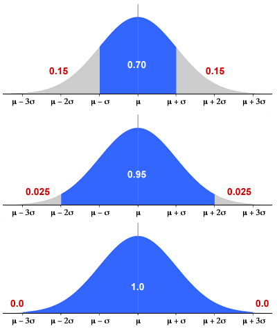

The exercises in the previous pages asked you to accurately obtain normal probabilities using either tables or the computer to do the calculations. You should be able to use the 70-95-100 rule of thumb to find some normal probabilities.
Since normal distributions are symmetrical, this allows you to also obtain some tail probabilities.

The following exercise asks you to use the 70-95-100 rule to find some probabilities approximately.